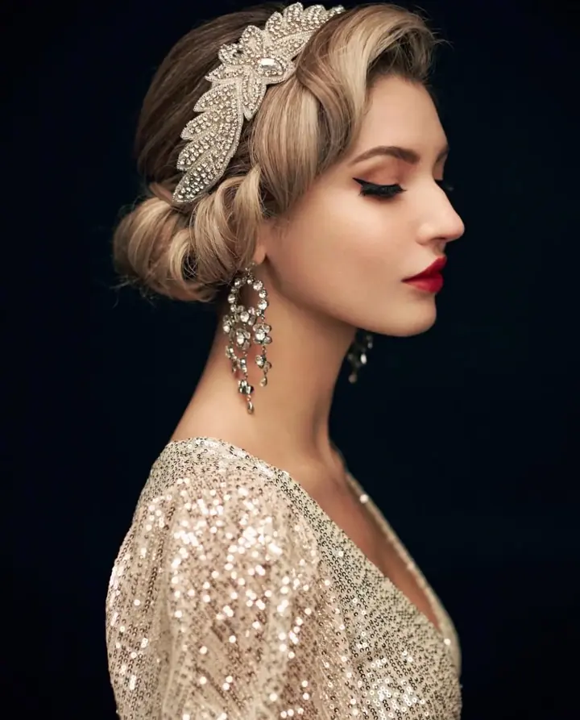
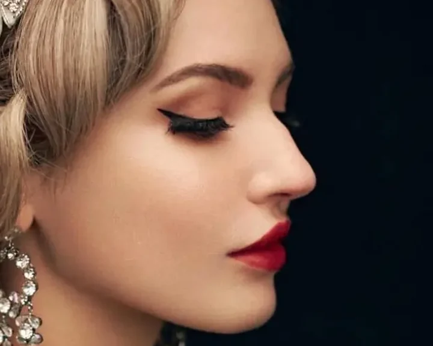
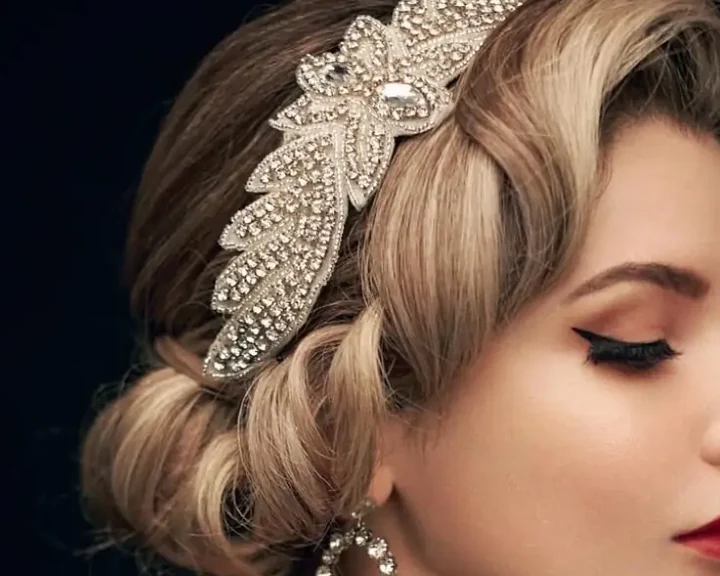

Classic glamour / Styling by Yuki
A little more presence.
How do stronger eyes, lips and accessories hold together?

The visual idea
Repeat the clarity of the makeup in a controlled hair silhouette.
The crisp wing, red lip and sculpted side wave share a deliberate finish. Jewellery frames the profile rather than adding another loose shape.
A closer reading / Yuki
It’s in the details.
Three observations from this photograph. Keep the part that speaks to you.

The contrast
A crisp black wing and full lashes sit against a clearly defined red lip.

The hair
A sculpted side wave rolls into a low gathered shape, giving the look a controlled profile.
The frame
A jewelled headpiece and drop earrings follow the profile and set the scale of the styling.
Make it yours
A reference,
not a rule.
Use this as a conversation about how much contrast feels like you. Yuki brings over ten years in bridal beauty and training in Hong Kong and South Korea.
Discuss your own look